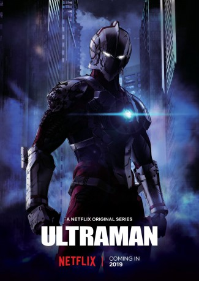

")
 
 IMDB-Wertung: 7.2 / 10
IMDB-Wertung: 7.2 / 10  Metascore:
Metascore: 
Shinjiro Hayata learns that his father passed on the "Ultraman Factor" to him and fights against evil.
Jahr: 2019
Dauer: 23 Minuten
FSK: 12
Land: USA Studio: NetflixTonspuren: DD5.1 - ,
Untertitel: Englisch, , Deutsch, Französisch,
Auflösung: 720p (1280x720) Größe: 6881 MB
Genre: Action, Sci-Fi, Animation/Trick, TV-Serie
Regisseur: Jeff Nimoy, Shinji Aramaki, Kenji Kamiyama
Drehbuch: Ardwight Chamberlain, Jeff Nimoy, Eiichi Shimizu, Tomohiro Shimoguchi, Eiji Tsuburaya
Soundtrack:
Darsteller:
 D.C. Douglas als Edo, 13 episodes, 2019
D.C. Douglas als Edo, 13 episodes, 2019 Steve Blum als Additional Voices, 1 episode, 2019
Steve Blum als Additional Voices, 1 episode, 2019 Robbie Daymond als Jack, 1 episode, 2019
Robbie Daymond als Jack, 1 episode, 2019 Lucien Dodge als Additional Voices, 1 episode, 2019
Lucien Dodge als Additional Voices, 1 episode, 2019 Doug Erholtz als Additional Voices, 1 episode, 2019
Doug Erholtz als Additional Voices, 1 episode, 2019 Erin Fitzgerald als Yuko Minami, 1 episode, 2019
Erin Fitzgerald als Yuko Minami, 1 episode, 2019 Josh Hutcherson als Shinjiro, 1 episode, 2019
Josh Hutcherson als Shinjiro, 1 episode, 2019 Kyle McCarley als Additional Voices, 1 episode, 2019
Kyle McCarley als Additional Voices, 1 episode, 2019 Matthew Mercer als Additional Voices, 1 episode, 2019
Matthew Mercer als Additional Voices, 1 episode, 2019 Cassandra Lee Morris als Young Shinjiro Hayata, 1 episode, 2019
Cassandra Lee Morris als Young Shinjiro Hayata, 1 episode, 2019 Liam O'Brien als Dan Moroboshi, 1 episode, 2019
Liam O'Brien als Dan Moroboshi, 1 episode, 2019 Brian Palermo als Ide, 1 episode, 2019
Brian Palermo als Ide, 1 episode, 2019 Tara Sands als Rena, 1 episode, 2019
Tara Sands als Rena, 1 episode, 2019 Hideyuki Tanaka als Shin Hayata, 1 episode, 2019
Hideyuki Tanaka als Shin Hayata, 1 episode, 2019 Fred Tatasciore als Hayata, 1 episode, 2019
Fred Tatasciore als Hayata, 1 episode, 2019 Kenjirô Tsuda als Adad, 1 episode, 2019
Kenjirô Tsuda als Adad, 1 episode, 2019Datei: X:\Comic-Serien\Ultraman S01\Ultraman S01E01.mkv seit 05.04.2019
Festplatte: Comicverfilmungen+MusikCD
 Es gibt insgesamt 34 Filme in der Gruppe 'Comic-Serien'
Es gibt insgesamt 34 Filme in der Gruppe 'Comic-Serien'